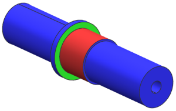
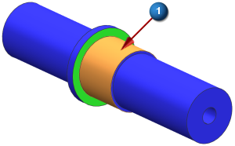
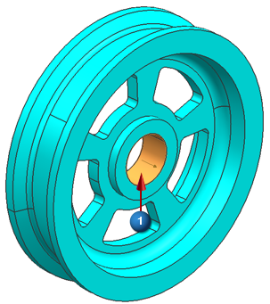
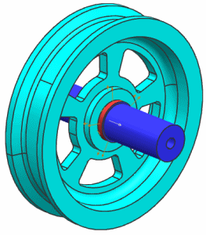

在滑轮与轴之间定义接触
您可以关闭网格以及多边形体的显示以使面的选择更容易进行。
 仿真导航器
仿真导航器
-

 wheel_fem1.fem(展开)
wheel_fem1.fem(展开) -
 3D 收集器(取消选中所有网格)
3D 收集器(取消选中所有网格) -
多边形几何体(展开)
-
Polygon Body(1)(关闭滑轮实体的显示)
-

 面对面接触(高级仿真工具条
面对面接触(高级仿真工具条  仿真对象类型下拉菜单)
仿真对象类型下拉菜单)
-
类型
手工

-
源区域
-
创建区域
-

-

-
公共接触参数
-
偏置
0.05
这将仿真在直径方向上0.1 mm的压配合。
-
确定
区域对话框
-
目标区域
-
创建区域
 仿真导航器
仿真导航器
-
 Polygon Body(1)
Polygon Body(1) -
Polygon Body(2)(关闭轴实体的显示)
-
-

注释
如果无法选择
，选择视图→操作→重新生成工作视图。 -
确定
所有对话框
-

-
Polygon Body(2)(选中)
-
